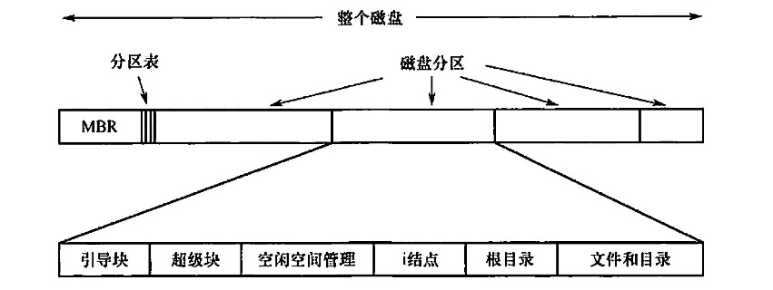
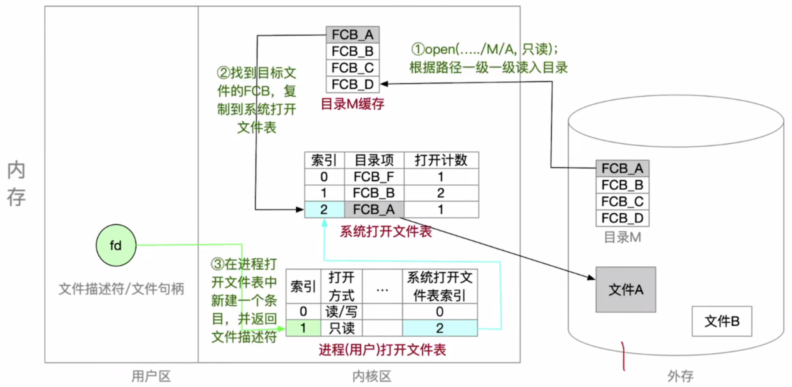
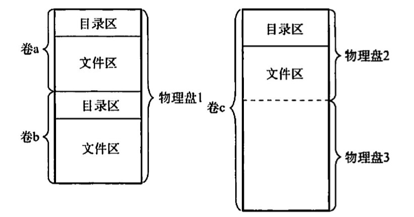
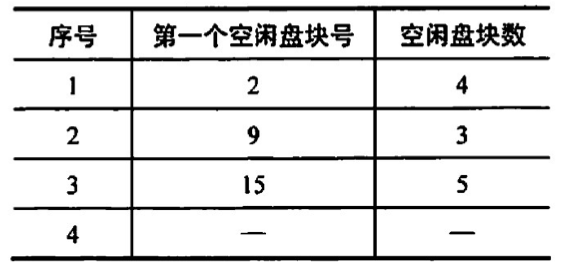
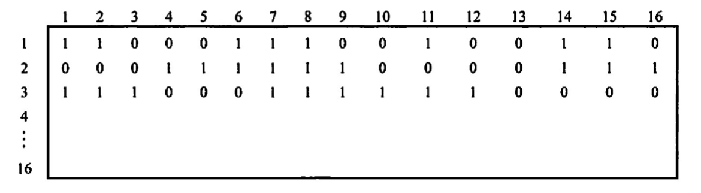
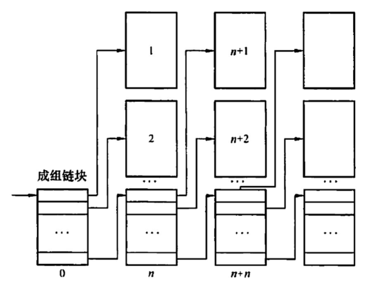
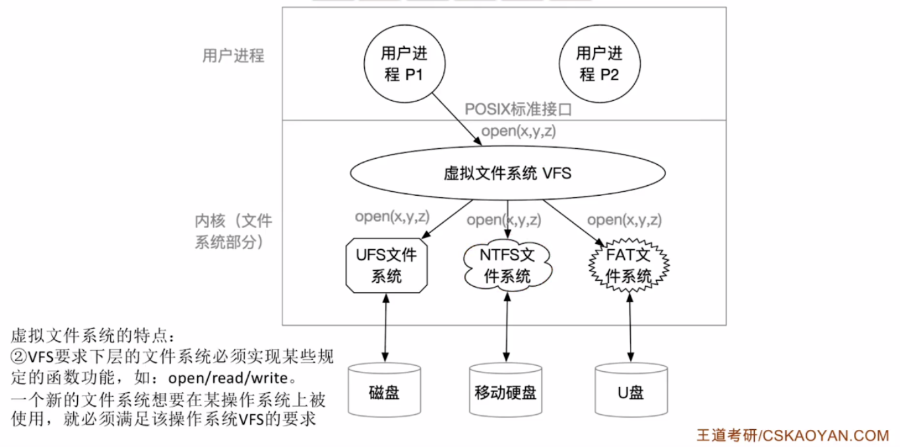

2022.09.21
文件系统在磁盘中的结构

文件系統在内存中的结构
内存中的信息用于管理文件系统并通过缓存来提高性能。这些数据在安装文件系统时被加载，在文件系统操作期间被更新，在卸载时被丢弃。这些结构的类型可能包括：
1）内存中的安装表(mount table），包含每个已安装文件系统分区的有关信息。 2）内存中的目录结构的缓存包含最近访问目录的信息。对安装分区的目录，它可以包括个指向分区表的指针。 3）【系统打开文件表】（整个系统只有一张）整个系统的打开文件表，包含每个打开文件的 FCB 副本及其他信息。 4）【进程打开文件表】（包含在PCB中）每个进程的打开文件表，包含一个指向整个系统的打开文件表中的适当条目的指针，以及其他信息
为了创建新的文件，应用程序调用逻辑文件系统。逻辑文件系统知道目录结构的格式，它将为文件分配一个新的 FCB。然后，系统将相应的目录读入内存，使用新的文件名和 FCB 进行更新，并将它写回磁盘。
一旦文件被创建，它就能用于 IO。不过，首先要打开文件。系统调用open0将文件名传递给逻辑文件系统。调用open0首先搜索整个系统的打开文件表，以确定这个文件是否已被其他进程使用。如果己被使用，则在单个进程的打开文件表中创建一个条目，让其指向现有整个系统的打开文件表的相应条目。该算法在文件己打开时，能节省大量开销。如果这个文件尚未打开，则根据给定文件名来搜索目录结构。部分目录结构通常缓存在内存中，以加快目录操作。找到文件后，它的 FCB 会会复制到整个系统的打开文件表中。该表不但存储FCB，而且跟踪打开该文件的进程的数量。然后，在单个进程的打开文件表中创建一个条目，并且通过指针将整个系统打开文件表的条目与其他域(如文件当前位置的指针和文件访问模式等）相连。调用open0返回的是一个指向单个进程的打开文件表中的适当条目的指针。以后，所有文件操作都通过该指针执行。一旦文件被打开，内核就不再使用文件名来访问文件，而使用文件描述符(Windows 称之为文件句柄）。
当进程关闭一个文件时，就会州除单个进程打开文件表中的相应条目，整个系统的打开文件表的文件打开数量也会递减。当所有打开某个文件的用户都关闭该文件后，任何更新的元数据将复制到磁盘的目录结构中，并且整个系统的打开文件表的对应条目也会被删除。

逻辑卷与物理盘的关系

空闲表法

空闲链表法
位示图法
0表示空闲，1表示已分配
⚠️注意下标从1开始⚠️

成组链接法


从用户的观点看，操作系统中引入文件系统的目的是( ）。 A.保护用户数据 B.实现对文件的按名存取 C.实现虛拟存储 D.保存用户和系统文档及数据
【答案】：B
UNIX 操作系统中，文件的索引结构放在（ ）。 A.超级块 B.索引结点 C.目录项 D.空闲块
【答案】：A->B
位示图可用于( ） A.文件目录的查找 B.磁盘空间的管理 C.主存空问的管理 D.文件的保密
【答案】：B
文件的存储空问管理实质上是对（ ）的组织和管理 A. 文件目录 B. 外存已占用区域 C. 外存空闲区 D. 文件控制块
【答案】：B->C
若用8个字（字长32位）组成的位示图管理内存，假定用户归还一个块号为 100的内存块时，它对应位示图的位置为（）。 A. 宇号为3，位号为5 B. 字号为4，位号为4 C. 宇号为3，位号为4 D. 字号为4，位号为5
【答案】：32bit代表32块。100/32=3...4，B
下列选项中，（）不是Linux 实现虛拟文件系统VFS 所定义的对象类型。 A. 超級块(superblock）对象 B. 目录项（inode）对象 C. 文件（file）对象 D. 数据（data）对象
【答案】：D
【2015 统考真题】文件系统用位图法表示磁盘空问的分配情况，位图存于磁盘的 32~127号块中，每个盘块占 1024B，盘块和块内字节均从0开始编号。假设要释放的盘块号为409612，则位图中要修改的位所在的盘块号和块内宇节序号分别是（）。 A. 81,1 B. 81,2 C. 82,1 D. 82,2
【答案】：409612/1024=400...12。400/8=50，50+32-1=81，80+1=82，C
【2019 统考真题】下列选项中，可用于文件系统管理空闲磁盘块的数据结构是（）。 I.位图 II.索引结点 III.空闲磁盘块链 IV.文件分配表 (FAT) A. 仅I、II B. 仅I、III、IV C. 仅I、III D. 仅II、III、IV
【答案】：C -> B. 文件分配表（FAT）的表项与物理磁盘块一一对应，并且可以用一个特殊数字 -1表示文件的最后一块，用 -2 表示这个磁盘块是空闲的，因此文件分配表（FAT）不仅记录了文件中各个块的先后链接关系，同时还标记了空闲的磁盘块，操作系统可以通过FAT对文件存储空间进行管理，即 IV 正确。